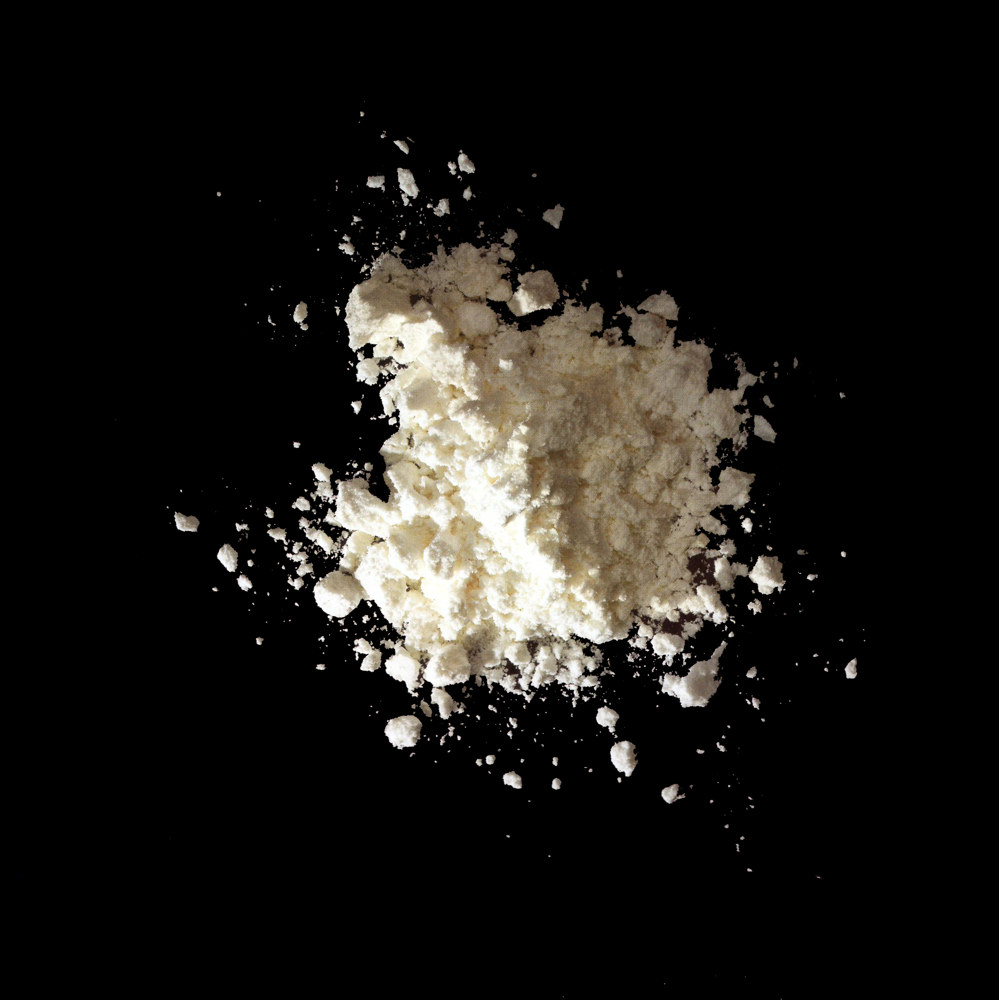

Corn flour

68525-86-0
Funtion
Process and Prep - Thickening Agent, Powder Flow Agent
Description
Corn flour stands out among corn ingredients as it is neither a thickener nor a sweetener. It is dry milled and known as cornstarch in British terminology. Corn flour is often mixed with wheat flour in baked goods to reduce gluten content and create a gel-like texture that maintains structure and moisture, thereby extending shelf life.
다양한 이름
옥수숫가루
기능
점증제
설명
옥수수 가루는 옥수수 첨가물 중에서 다소 독특한 특성을 가지고 있다. 엄밀히 말해서 증점제도 감미료도 아니지만, 그것들과 비슷한 특성을 지닌다. 실제로 영국에서는 옥수수 전분을 "옥수수 가루"라고 똑같이 부르기도 한다. 옥수수 가루는 건조 분쇄된 상태이며, 제빵에 사용되는 밀가루에 중요한 첨가물로, 대부분의 분말과 잘 혼합된다. 요리에서 글루텐 함량을 줄이는 데 도움이 되며, 구조를 유지하고 수분을 가두는 독특한 젤 같은 질감을 제공한다.